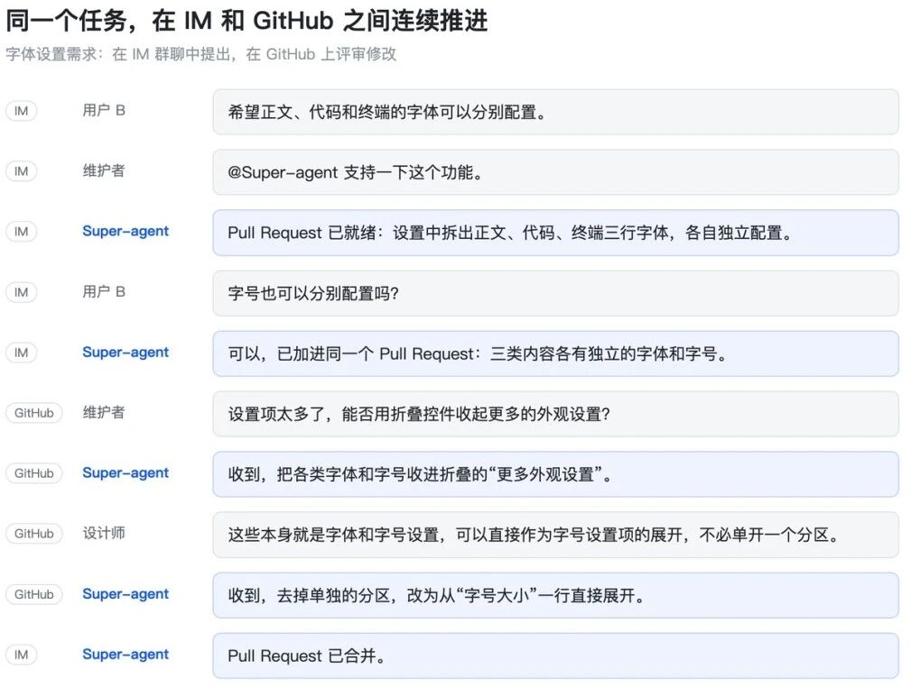
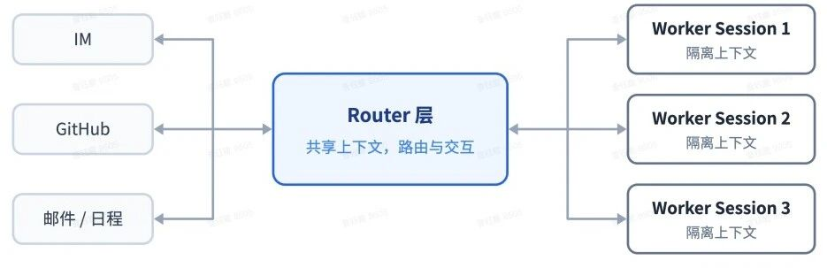
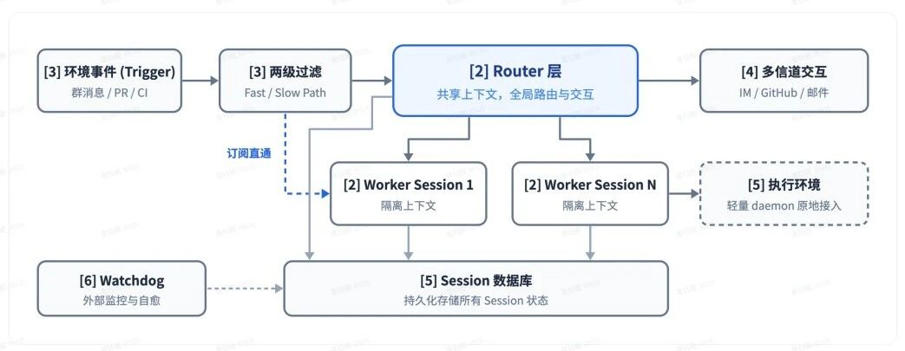
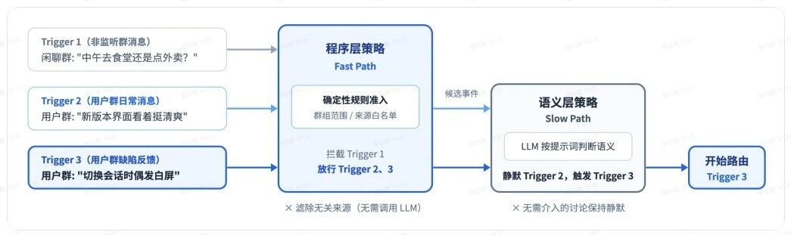
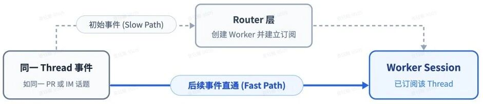
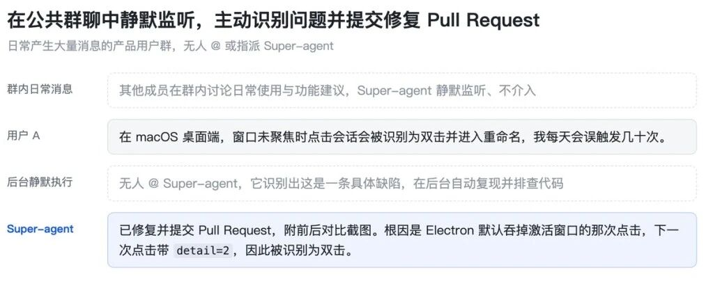
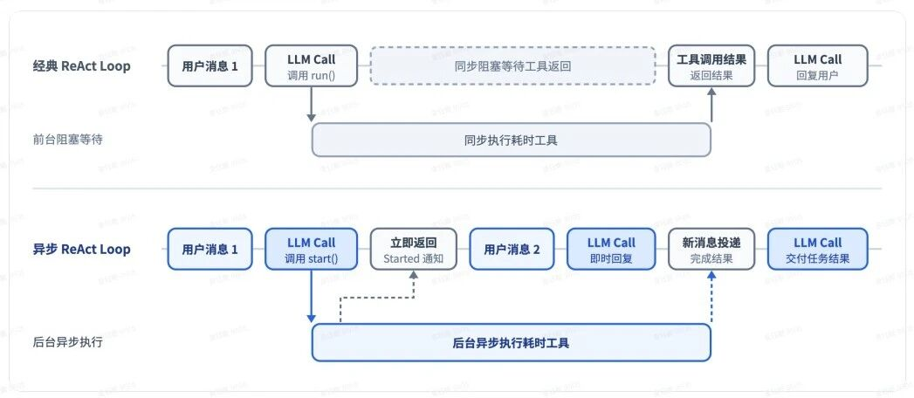
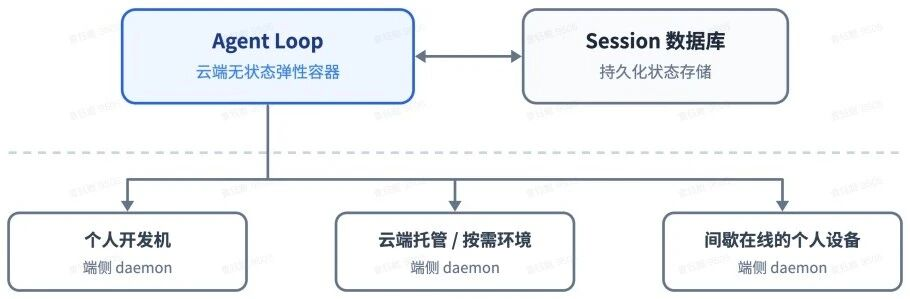
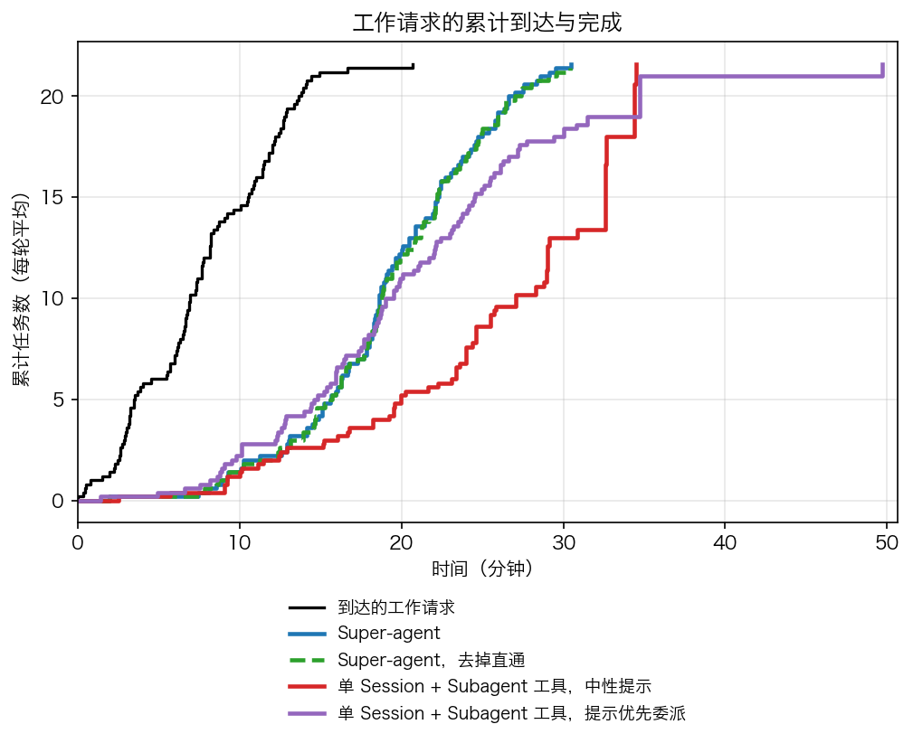

过去这一年，只要你在日常工作里高频用过 Cursor、Claude Code 或者各类编程智能体，多半经历过一种特殊的疲劳。
这种疲劳来自必须同时盯住的好几个对话窗口。左边的窗口在排查接口报错，右边的窗口在重构前端组件，终端里还有一个正在跑回归测试。每个窗口都有自己的上下文，每个任务都在等你的下一步确认。一旦任务多起来，人的角色就从写代码的工程师，变成了在多个聊天框之间来回切换的杂耍演员。哪个窗口执行完了，哪边测试报错了，刚才在另一个标签页里交代了什么背景，全得靠人脑硬记。
机器没有卡死，人先被耗尽了。
2026 年 10 月 31 日晚间，DeepSeek Harness 团队发布了技术长文《Super-agent 设计探索：迈向更自主的 Agent 系统》，并在开源社区放出了原型插件 dsh-superagent-prototype。
这篇技术文章没有堆砌模型参数，也没有展示花哨的演示样例，而是非常冷静地指出了当前整个行业在智能体产品化上的共同瓶颈。团队在文章开篇给出了一个基于真实研发观察的数字，一个普通人类通常只能同时跟进三到五个活跃会话。一旦超出这个数量，单会话的串行等待、多任务的上下文混杂，以及本地电脑关机断网带来的中断，就会把人的精力撕得粉碎。
DeepSeek 给出的解法，是把现存所有的聊天框底层彻底打散。会话不该由用户来管，它应当退化为系统内部的调度细节。

一、把会话降级为底层技术细节
要理解 DeepSeek 这套名为 Super-agent 的架构，先得看清我们现在用的聊天框究竟是从哪里来的。
当前市面上绝大多数智能体产品，无论界面设计得多么精致，骨子里都在延续单一会话的模式。之所以做成这个样子，很大程度上是大模型底层 API 的设计惯性。大模型的接口原本就是无状态的一问一答，产品开发者顺理成章地给用户套上一个对话窗口，用户在框里敲一段字，系统在后台调一次接口。
这种模式把原本属于系统的状态维护工作，甩给了终端用户。
在单一会话里，一旦用户想同时推进两件不同的事，模型的注意力就会受到干扰。两件事的日志、代码片段和报错信息混在一根时间线上，上下文长度迅速见顶，模型的推理质量跟着直线下滑。为了解决这个问题，大家只能多开窗口。多开窗口的代价，就是用户必须自己充当总指挥，人肉在窗口 A 和窗口 B 之间搬运信息。
DeepSeek 在 Super-agent 里的第一项改动，是建立一套 Router 与 Worker 的双层架构。
整个系统里，面向用户的只有一个常驻的 Router 层。所有外部消息，无论是你在群聊里的发帖、邮件里的通知，还是 GitHub 上的评论，都统一由 Router 接收。它像是一个团队的技术主管，只负责看清全局信息，维持整体上下文，并把任务分配下去。为了让这个总管跑得足够轻快，它不直接伸手去写代码或者跑命令，甚至可以完全不挂载系统执行工具，只用较轻量的模型来运转。
真正下地干活的是 Worker 层。
每个 Worker 都是一个相互独立的隔离会话，专门挂载了完整的执行工具，由推理能力最强的主力模型驱动。比如一个 Worker 负责去复现报错，另一个 Worker 负责去重构模块。它们在各自干净的沙箱里专注推进单一目标，不会被其他任务的细节干扰。

这里最关键的产品设计在于，Worker 绝对不直接向外部渠道发消息。
如果五个 Worker 同时在群里向你汇报进度、抛出问题，工作群瞬间就会被机器轰炸瘫痪。所有的 Worker 完成阶段性工作后，只把关键结论和结构化状态回传给 Router，由 Router 统一组织语言，用同一个声音向人类交代结果。
很多人看到中心分派节点，第一反应是这与常见的多智能体团队很像。DeepSeek 在文中特别厘清了这个差异。
以往常见的智能体协作，往往是在一个复杂的单任务内部拆解步骤，主管智能体需要深度参与每一个具体子环节的推演，自身承担了极重的推理计算负荷。Super-agent 的 Router 只关心任务之间的高层归属与分流，任务内部的细节完全放权给 Worker。这种分工让中心节点的计算压力大幅减轻，也让系统具备了处理高并发任务的前提。
在实现细节上，常驻的 Router 层采用单会话机制，也没有表面上那么容易形成拥堵。当外部事件密集涌入时，上一轮推理期间积压的多条触发事件会自动合并，在下一次模型调用中一并注入。这种长输入、短输出的批处理方式，在模型的预填充阶段能够并行计算，单次请求耗时的增长远慢于事件堆积的速度，从而巧妙分摊了推理开销。
二、从被动提问到环境事件驱动
有了分工架构之后，接下来的问题是这个系统靠什么运转起来。
现在的 AI 助手最大的特征是被动。你在输入框里敲下一个回车，它开始动；你不敲回车，它就永远处于静止状态。在个人日常写小脚本时这套逻辑尚可应付，但一旦放到软件研发或者企业协作的真实流程里，被动响应就会变成巨大的阻碍。
真实的软件研发工作，极少是由某个人在某一个特定时刻下达完整指令驱动的。它是被环境里络绎不绝的事件驱动的。
测试流水线挂了是一条事件，同事在群里贴出一段报错日志是一条事件，代码仓库里新增了一个 Pull Request 评审是一条事件，客户发来一封功能修改邮件也是一条事件。DeepSeek 把这些输入统称为 Trigger。
Super-agent 的核心目标，是让系统直接监听这些 Trigger，在没有人类明确敲指令的情况下主动运转。

但这里立刻会撞上一道巨大的现实鸿沟。
工作群聊和开发环境是一个极其吵闹的场所，充斥着表情包、闲聊、无关讨论与重复提醒。真实环境的消息流呈现出典型的多噪音、少触发特征。如果每进来一条消息都唤醒大模型做一遍深度语义分析，团队每天光是为处理闲聊所付出的算力成本就会让人难以承受，系统的响应延迟也会被拖得无法接受。
DeepSeek 在这里借用了计算机系统里经典的快慢路径思想，设计了两级过滤机制。
第一级过滤是完全由确定性代码编写的程序策略，充当快路径。它不调用任何大模型，纯靠硬规则跑在最前面。例如针对消息发送者的身份白名单、群聊频道类型、消息格式等条件进行毫秒级筛选。那些明显与系统无关的闲话、表情包或者日常打卡，在这一层直接被丢弃。
只有通过了程序策略初筛的候选事件，才会进入第二级的语义策略，交由大模型来分析。
语义策略充当慢路径。开发者可以通过编写提示词，灵活定义哪些场景需要 AI 介入。比如群里有人贴出异常堆栈、有人明确提问某个技术方案、或者有人在讨论刚刚上线的某个改动。大模型结合上下文做出判断，一旦认定属于需要处理的研发事件，系统就会将其打包为一个正式任务，交给 Router 派发。

为了不让后续所有的琐碎沟通把中心总管挤爆，团队还给事件引入了订阅直通通道。
在具体的协作里，针对同一个代码评审或者同一个群聊话题的一连串消息，会形成一条连续的时间线，系统称之为 Thread。当 Router 为某个新任务创建了对应的 Worker 之后，这个 Worker 就会直接订阅这条 Thread。
从这一刻开始，针对该任务的所有后续跟进讨论，都会绕过 Router，通过快路径直接送达负责该任务的 Worker。Router 只需要在最初分配任务时动一次脑筋，以及在任务最终交付时验收一次。这样一来，中心节点的排队拥堵被彻底化解了。
为了让上下文更加高效，团队在上下文管理中采用了内联与溢出机制。系统将有限的上下文窗口视为高速缓存，近期最可能用到的关联标识和前后相邻消息直接放入上下文，超出预算的长文本则溢出到窗口外，仅保留引用入口供按需调取。在此基础上建立的链式召回机制，允许智能体沿着关联标识像图谱一样多跳展开历史信息，在不挤占单次推理窗口的前提下保持了长程检索能力。

三、懂得何时闭嘴的投机执行
在 Super-agent 这篇长文里，最能体现产品直觉和工程克制的设计，是它引入了计算机系统中的投机执行机制。
过去几年，许多自动化办公与智能助理类产品之所以在团队内部迅速招致反感，往往是因为它们太想要证明自己的存在感。机器人在群里频繁抓取关键词，抢在真人之前回复一堆正确的废话，或者动不动就发出一长串无关痛痒的确认提示。这种噪音不仅没有提效，反而在持续消耗团队的注意力。
DeepSeek 的做法正好反了过来。他们要求系统不仅要学会主动干活，更要学会何时保持安静。
所谓投机执行，就是利用闲置的后台计算资源，在还不确定结果是否会被人类采纳的前提下，提前在暗处展开尝试。如果最终跑出来的成果确有价值，就把东西端到人类面前；如果中途发现搞不定或者根本没价值，就默默把产物丢弃，全程不打扰任何人。

DeepSeek 在自己内部的研发群里配置了一条极为生动的策略，静默复现与修复。
日常开发中，常有工程师在群里顺口提了一句刚刚发现的问题，或者几个人在群聊里猜测某段代码会不会导致异常。在这个瞬间，没有任何人显式去呼叫 AI，也没有人指派具体的工单。
但后台的 Super-agent 已经捕捉到了这段讨论。Worker 在云端容器里迅速拉取代码仓库，悄悄尝试搭建运行环境，用讨论里的参数去跑测试复现。
此时系统面临两种结果。
如果 Worker 经过一番折腾，发现根本无法复现问题，或者涉及的业务逻辑太深，模型根本没有把握给出确切解法，它会立刻停手，销毁临时沙箱，什么话也不会在群里说。在人类工程师的视角里，群里就像什么事情都没发生过一样，大家依然继续讨论。
可一旦 Worker 坐实了缺陷，并且顺利在本地跑通了验证，生成了一段简洁清晰的补丁代码，它就会直接在 GitHub 上提交 Pull Request，同时在群里给出一句简短干净的回复，附上修复链接。
团队成员还在群里讨论方案的可能性，AI 已经把写好测试并跑通的代码放到了审查界面上。
这种设计是在用廉价的机器算力，去置换昂贵的人类沟通成本。把噪音压制到最低，把确定性的交付拉到最前，这才是 AI 真正融入人类工作流时该有的姿态。
针对不同信道的沟通，团队甚至给出了非常严苛的交互规范。在即时通讯软件里，AI 严格遵循低打扰原则，单次回复必须控制在一小段文字以内，只说结论、只给链接，严禁把冗长的思维链和工具调用日志倾倒在群里；只有当交付物转移到 GitHub 或者开发文档等异步载体时，才允许生成结构完整、信息密度极高的大篇幅技术报告。
四、全双工交互与存算分离
除了在任务逻辑上重构协作流，Super-agent 在底层的执行循环与硬件部署方式上也做了彻底的拆解。
首当其冲被改动的是经典的 ReAct 循环。
传统的智能体在调用工具时，遵循的是同步阻塞模型。模型发出一个运行命令，整个思考循环就必须停下来，眼巴巴地等着终端把标准输出和错误日志返回回来。在这段长达几十秒甚至几分钟的时间里，前台的聊天界面完全被锁死，哪怕用户突然发现刚才提的需求写错了想叫停，或者想补充一个背景参数，系统都根本听不见。
这种一问一答的交互方式，在通信领域叫半双工。
DeepSeek 把这种阻塞彻底改造成了全双工。他们把单次的运行命令拆解成了启动与终止两个非阻塞指令。模型调用启动指令之后，底层系统立刻返回一个已经启动的状态确认，前台会话随即恢复自由，继续接收用户的新输入。
耗时的编译、跑测试或者检索任务被放到系统后台异步推进。任务跑完之后，产生的结果被当作一条新的输入事件推送进会话。
这就意味着，AI 在后台全力干活的同时，你依然可以在前台跟它继续交流，甚至随时打断它的执行方向。

解决了阻塞问题后，下一个拦路虎是设备的物理绑定。
很多开发者都遇到过这种尴尬场景，本地终端里挂着一个正在重构项目的 Agent，眼看快跑完了，你必须合上笔记本电脑赶班车。电脑一合盖，网络一断，整个执行进程就此中断，之前攒下的会话上下文全化为乌有。
现有的大多数本地开发工具，把计算循环、会话状态和代码执行环境牢牢绑定在同一台个人电脑上。
DeepSeek 在这里应用了大型分布式系统里经典的存算分离理念，做了两层彻底的解耦。
第一层解耦，把推动 Agent 循环的计算与会话状态分开。跑思考推演的计算容器被搬到云端，做成无状态的弹性服务；而具体的会话历史与任务进度，全部写入持久化数据库。云端的计算容器可以随时重启、扩容或者漂移，会话依然安然无恙，Agent 得以做到真正的全天候在线。
第二层解耦，把云端的计算与开发者的执行环境解耦。
有些产品在做类似功能时，习惯把用户的代码全盘拉到云端沙箱去跑。但真实开发中，工程师的电脑里往往存着没有提交的暂存改动、本地特有的测试环境变量，甚至是内网访问权限。强行把环境整个搬上云端，不仅极其耗时繁琐，还会引发巨大的代码安全顾虑。
DeepSeek 选择让沉重的执行环境留在原地。
工程师的电脑上只需要跑一个极其轻巧的后台守护进程，专门充当云端 Agent 的手脚。云端的思考大脑通过标准化协议向本地守护进程下发命令，守护进程在本地跑完之后只把结果返回给云端。
即便你的电脑中途休眠离线，云端的任务依然挂起等待；一旦机器重新连上网，守护进程自动连回云端，之前没跑完的构建任务立刻无缝接力继续跑。
这种架构不仅允许工程师自带日常办公电脑接入系统，也可以随时无缝接入团队内部的专属测试服务器或者按需启动的远程沙箱，彻底解开了物理终端对智能体执行周期的束缚。
为了防止这种常驻系统在长期无人值守时陷入混乱，架构在主系统之外还设立了一个独立的 Watchdog 看门狗机制。
传统的运维监控只看服务器进程活着没有，但大模型最常见的故障并不是进程死掉，而是陷入毫无意义的死循环，或者在执行命令时完全跑偏了方向。Super-agent 的看门狗本身也是一个具备完整大模型能力的独立会话，专门从外部巡视各个 Worker 的工作进展，一旦发现某个任务长时间停滞或者逻辑偏离，就会主动介入修复，甚至允许人类管理员用普通白话向看门狗询问系统目前的健康状况。

五、算一笔账，三十七个百分点的 Token 代价
聊完这套工程架构，我们必须回到一个务实的产品经理视角来算一笔最核心的账。
任何优秀的架构设计，本质上都是工程权衡的结果。Super-agent 实现了高并发、实现了主动响应、实现了不打扰人类，那么它付出的代价是什么。
DeepSeek Harness 团队在技术报告里给出了非常坦诚的实验数据。
他们搭建了一个包含三百条混合消息的模拟测试环境，其中夹杂着日常闲聊、CI 测试回执、任务催促以及二十条真正需要编写代码的工作请求。研究人员把 Super-agent 与传统单会话模式放进同一个赛场，每种方案重复跑了五次。
在完成任务的速度上，Super-agent 表现出了压倒性的优势。
它的任务完成时间中位数是十二点四分钟，九五分位数是十五点七分钟。而在传统单会话且配置了子智能体调用工具的对照组里，九五分位数的耗时直接被拖到了二十九点五分钟，几乎慢了一倍。

为什么会有这么大的差距。
实验揭示出了一个非常残酷的事实，传统方案虽然在理论上允许大模型调用子会话，但在实际运行中，模型究竟会不会主动分派任务，完全依赖提示词的临场引导。
在中性提示词的设置下，模型在五次实验中一次都没有主动调用子智能体。它总是习惯性地选择在自己的主会话里硬扛所有任务，结果就是一边处理代码，一边被源源不断涌入的新群聊消息频繁打断，导致总时间无限拉长。即使换上措辞极度强烈的委派提示词，模型在五次里依然有一次自作聪明地认定任务很简单而拒绝分派，形成了漫长的长尾等待。
Super-agent 从代码结构上把调度权收归 Router，Worker 只能专心干手头的事，彻底消除了依赖模型自觉性带来的执行漂移。
但提速的代价，是算力账单的显著上升。
因为系统必须为不同的任务独立建立并维持隔离会话，每个会话都要加载自己的上下文缓存，这导致 Super-agent 整体消耗的缓存读取 Token 远高于传统的单会话模式。
在消融实验中，如果把前面提到的订阅直通机制去掉，让所有消息无论新旧一律经过 Router 重新判断，任务的完成时间虽然没有明显变化，但 Router 需要做出的决策次数增加了三成，整个系统消耗的缓存读取 Token 从两千三百二十三万，一口气蹿升到了三千一百七十七万。
这相当于为了维持全局总管的运转，凭空多烧掉了近百分之三十七的 Token。
这就是产品落地时必须权衡的算盘。在普通的问答玩具或者低价值业务里，没有人愿意为这种多层调度承受近四成的成本膨胀。只有在专业软件研发、关键工业协作这种单位时间产出极其高昂的场景下，用后台算力与缓存读取的增加，去置换人类核心开发者的注意力和响应等待时间，这笔经济账才算得过来。
同时，团队也对单会话 Router 的吞吐承载极限做了压力测试。实验将每分钟到来的事件速率从一条逐步推高到四十条，发现虽然事件数量翻了四十倍，由于积压消息在下一次模型调用中被一次性打包批处理，整个单次请求的耗时仅从二点五秒微调上升到三点九秒。分摊到每一个独立决定的推理时间反而大幅下降。这表明只要上下文长度未被撑爆，中心总管的设计在普通中型团队规模下完全能够平稳支撑。
六、尚未解决的工程硬伤与产品真问题
在充分肯定这套架构展现出的产品敏锐度之余，我们也必须看到它距离成为真正工业级通用基础设施之间的几道深沟。DeepSeek 团队自己在文章末尾同样毫无保留地指出了这些技术留白。
第一个硬伤，是长周期记忆的断崖式衰减。
针对任务执行过程中的上下文膨胀，Super-agent 提出了内联与溢出的机制，把上下文窗口当成计算机的缓存来用。频繁使用的紧密信息直接放入窗口，超出的部分截断并留出索引引用。结合唯一标识图谱，系统实现了一种名为链式召回的多跳检索能力，让 Router 能够顺藤摸瓜找回先前的任务细节。
但这套机制目前只在几天到几周的中短期跨度里有效。
当一个软件系统的维护周期拉长到数月甚至数年，跨越成百上千个任务版本时，单纯依靠引用图谱展开上下文，很容易造成检索路径过长、有效信息淹没在海量历史摘要里的问题。真正的全局持久记忆，至今依然是整个 AI 行业悬而未决的公认难题。
第二个硬伤，是防不胜防的提示词注入与本地系统权限风险。
在以往的单机智能体里，即便模型被恶意提示词诱导跑了恶意命令，影响的也只是一次单次的会话。而在 Super-agent 的设定里，AI 是长年累月潜伏在工作群聊、邮件和公开代码仓库里的。
这就意味着，外部攻击者甚至不需要直接接触你的系统，只需要在 GitHub 的某个公开议题或者评审评论区里，留下一段经过精心编码的提示词注入文本。
当常驻的 Worker 按照既定流程去拉取这个任务、分析这段评论时，就有可能被恶意指令劫持。由于该架构支持通过守护进程穿透回工程师的本地开发机执行代码，一旦被攻陷，开发者电脑上的本地私有代码、密钥凭据以及企业内网环境，就会彻底暴露在攻击者面前。在权限隔离机制与行为准入审核完全成熟之前，任何严谨的技术团队在接入此类自主代理时，都不得不打上巨大的问号。
第三个问题，也是最根本的产品哲学问题，当我们拆掉了聊天框，人与 AI 到底该如何相处。
把会话降级为底层技术实现之后，传统的聊天对话框已经无法承载如此复杂的多任务异步协作。用户不可能整天在群里看着 AI 一会儿冒出来发个链接，一会儿沉入水底。
人类到底需要一个什么样的控制面板。
是一个像项目管理看板一样的任务流矩阵，还是一个高度特化的代码审查流水线，抑或是一个只在关键节点弹窗申请审批的静默托盘图标。在旧的对话范式被瓦解之后，新的交互界面标准依然处于完全空白的探索期。
不仅如此，随着智能体被赋予的自主行动权限越来越宽，人类在什么节点介入、保留多大程度的一票否决权，同样需要重新定义。如果每一个后台提交的补丁都要人类通读几百行代码才能放心合并，那么人类的注意力很快又会在代码审查环节遭遇新的堰塞湖。
结语：从对话玩具走向数字同事
通读 DeepSeek Harness 团队公开的这套架构探索，最给人触动的其实不是什么前沿的模型突破，而是老派计算机系统工程思想的胜利。
正如团队在文中所坦陈的那样，这套架构里几乎看不到什么凭空诞生的神秘理论。无论是分层调度、快慢路径过滤、批处理合并，还是投机执行、存算分离、看门狗控制循环，全都是过去几十年里计算机科学家们在构建操作系统、数据库和分布式网络时早已千锤百炼的基础武器。
过去一年多，太多人把注意力单纯绑在大模型的参数体量与评测榜单上，以为只要模型分数再涨几分，自主智能体就会自然而然地降临。
但现实一次次证明，如果缺乏严密的系统调度与精巧的人机分工设计，再聪明的模型被扔进一个单薄的聊天框里，也只能成为一个需要人类频繁伺候、动不动就让人抓狂的半成品。
DeepSeek 这次给行业指出的一条清晰路径在于，停止把时间浪费在给聊天框刷漆上。
把任务调度的脏活接过来，把不合时宜的打扰压下去，在人与模型之间建立清晰的权责与协作边界。当 AI 学会了在后台安静地复现问题、默默跑通测试，并在合适的时候把做好的东西端上来时，我们距离那个真正意义上的数字同事，才算往前迈出了扎实的一步。